Can the core actually be seen?
The webcam at Lopstick was plate-solved from its own stars: bearing 178.5° ,
94° wide, pitched 3° below level. Every target of this trip falls inside that frame —
the Milky Way core, Rho Ophiuchi, M8 and M20 — at the same low southern altitudes you
will be shooting them at, from 16.6 km away.
So this is not a cloud proxy. A star either shows through or it does not. It also covers
the case the satellite handles worst: infrared struggles with low cloud whose tops sit near
ground temperature, and low cloud is exactly what blocks a target at 16°.
0stars in the core region · Tue 00:45
Flux 376 · brightest source
12× the noise · core at
1.7° altitude
One bar per capture, height is light collected in the core region.
Click a bar to jump to that frame.
Why flux and not just a count
A star count depends on where the detection threshold lands, and the stack noise moves
between captures. Two grabs two minutes apart gave 15 sources and then 5 — not because the
sky changed, but because σ went from 0.78 to 0.88 and the 6σ cut moved with it. Flux is the
total light collected and does not care where a threshold sits, so it is the number to
compare across captures and across nights.
● core region
● Rho Ophiuchi
● teapot
● detected source
How well is the camera pointed?
The star counts depend on a plate solve — bearing 178.5°, 94° wide, pitched 3° below
level — and every number here rests on it, so it is worth showing rather than asserting.
Measured against catalogue positions across every capture:
Confident matches — stars brighter than magnitude 2.95, where the
pairing is unambiguous — sit at 26 px mean error, about
1.7° at this plate scale. Fainter stars show larger residuals, but those are almost
certainly mispairings rather than a bad solve: at an 80 px search radius a faint catalogue
star will find something . Error does not grow toward the frame edge
(correlation −0.71), so this is not lens distortion.
A 26 px pointing error is about a fifth of the 220 px aperture
radius. Flux is unaffected; naming an individual star is not, which is why the headline
number is flux and the star count is shown as supporting detail.
The frames
Each is a median stack of the 30 least-compressed frames from a 30-second grab at 1080p,
stretched so faint stars are visible, masked to sky only. Newest first.
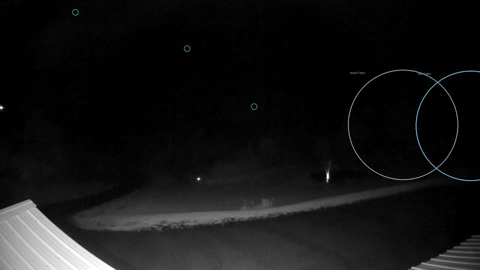
Tue 11 Aug · 00:45 core 0 stars · flux 376 · peak 12× · alt 1.7°rho 0 stars · flux 0 · peak 0×teapot 0 stars · flux 97130 of 60 frames stacked · noise σ 0.91 · 3 sources in sky 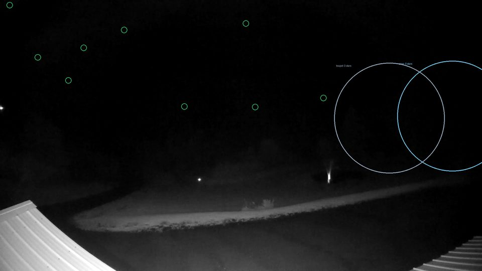
Tue 11 Aug · 00:30 core 0 stars · flux 268 · peak 6× · alt 3.5°rho 0 stars · flux 0 · peak 0×teapot 0 stars · flux 95130 of 60 frames stacked · noise σ 0.78 · 9 sources in sky Tue 11 Aug · 00:15 core 0 stars · flux 1,356 · peak 6× · alt 5.2°rho 0 stars · flux 0 · peak 0×teapot 0 stars · flux 2,10230 of 60 frames stacked · noise σ 0.93 · 3 sources in sky 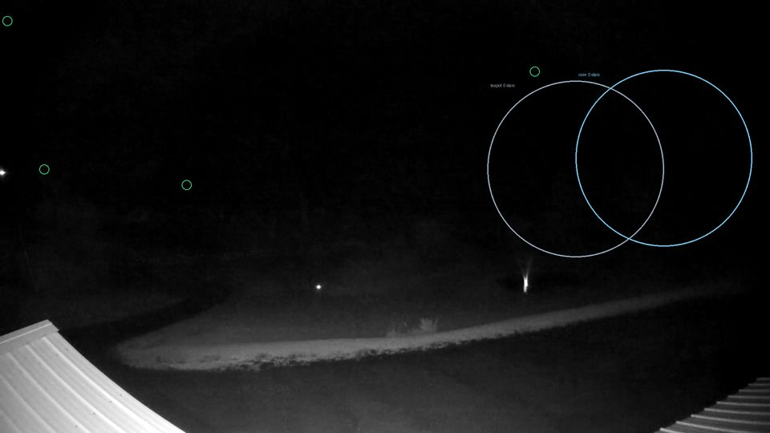
Tue 11 Aug · 00:00 core 0 stars · flux 939 · peak 6× · alt 6.8°rho 0 stars · flux 0 · peak 0×teapot 0 stars · flux 1,30330 of 60 frames stacked · noise σ 1.19 · 4 sources in sky 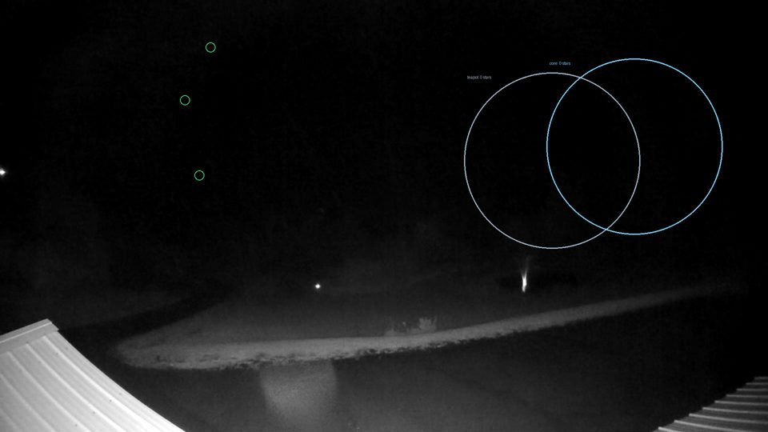
Mon 10 Aug · 23:45 core 0 stars · flux 523 · peak 4× · alt 8.3°rho 0 stars · flux 0 · peak 0×teapot 0 stars · flux 1,35230 of 60 frames stacked · noise σ 1.27 · 3 sources in sky 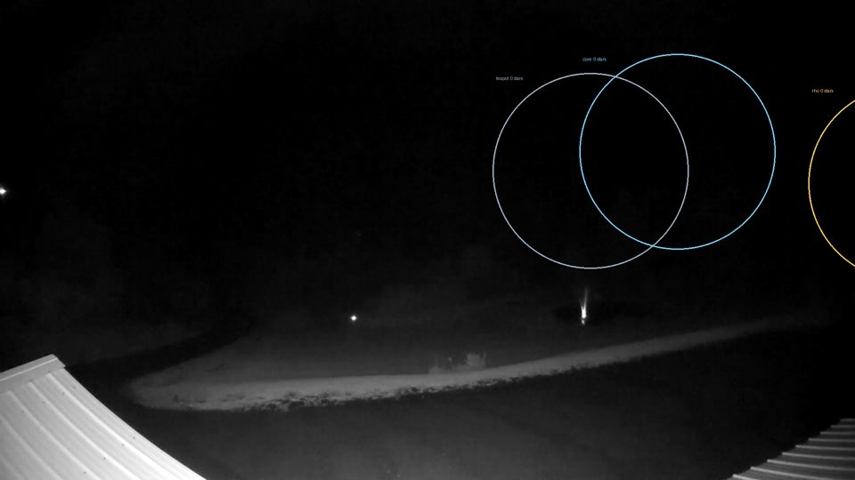
Mon 10 Aug · 23:30 core 0 stars · flux 2,618 · peak 7× · alt 9.7°rho 0 stars · flux 4 · peak 3×teapot 0 stars · flux 3,61830 of 60 frames stacked · noise σ 0.95 · 0 sources in sky 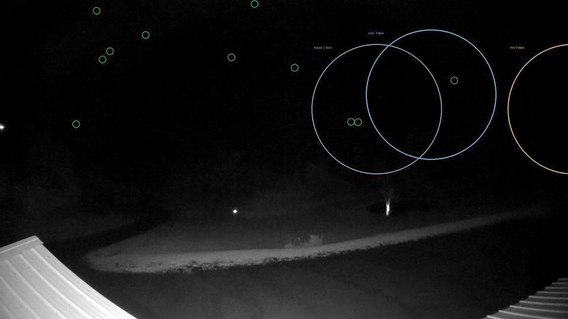
Mon 10 Aug · 23:15 core 1 stars · flux 1,764 · peak 6× · alt 10.9°rho 0 stars · flux 119 · peak 4×teapot 2 stars · flux 2,52830 of 60 frames stacked · noise σ 1.24 · 11 sources in sky 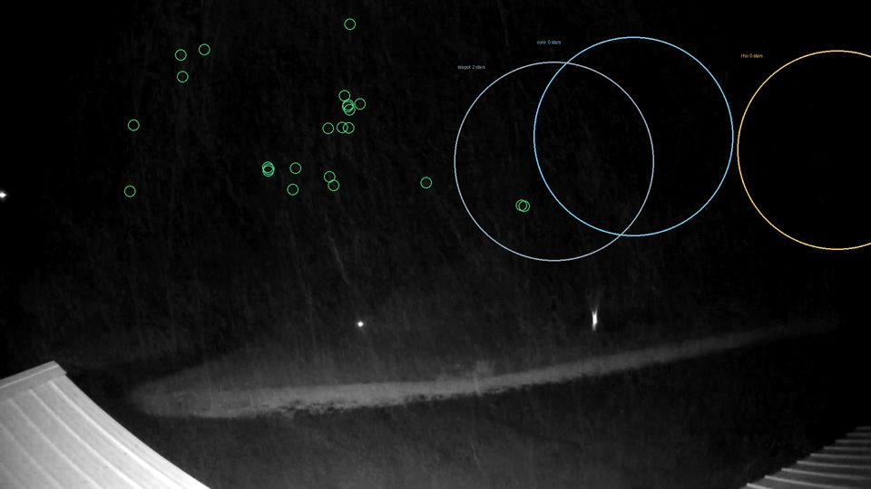
Mon 10 Aug · 23:00 core 0 stars · flux 9,126 · peak 6× · alt 12.1°rho 0 stars · flux 697 · peak 6×teapot 2 stars · flux 9,51530 of 60 frames stacked · noise σ 1.72 · 24 sources in sky 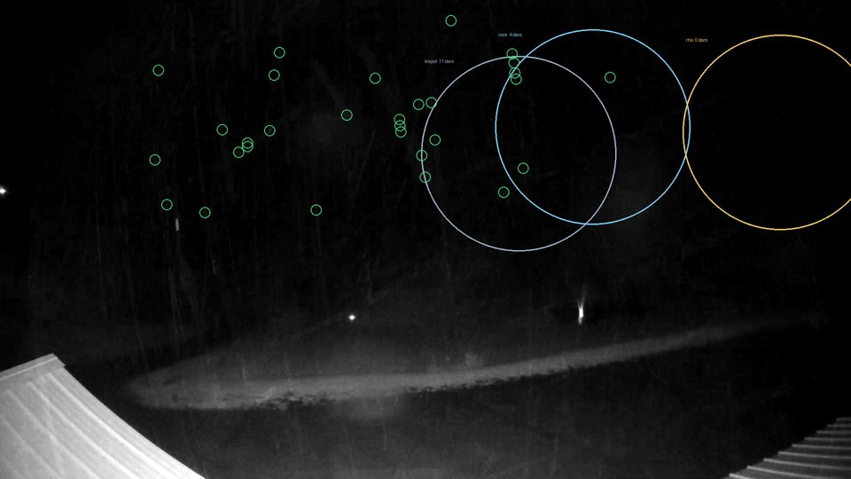
Mon 10 Aug · 22:45 core 4 stars · flux 14,024 · peak 14× · alt 13.0°rho 0 stars · flux 2,600 · peak 10×teapot 11 stars · flux 16,68130 of 60 frames stacked · noise σ 1.55 · 40 sources in sky 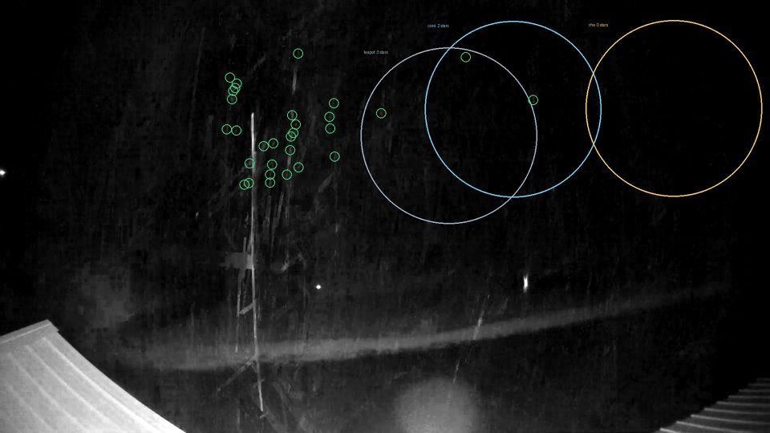
Mon 10 Aug · 22:30 core 2 stars · flux 9,665 · peak 21× · alt 13.9°rho 0 stars · flux 3,027 · peak 7×teapot 3 stars · flux 13,32330 of 60 frames stacked · noise σ 1.94 · 40 sources in sky 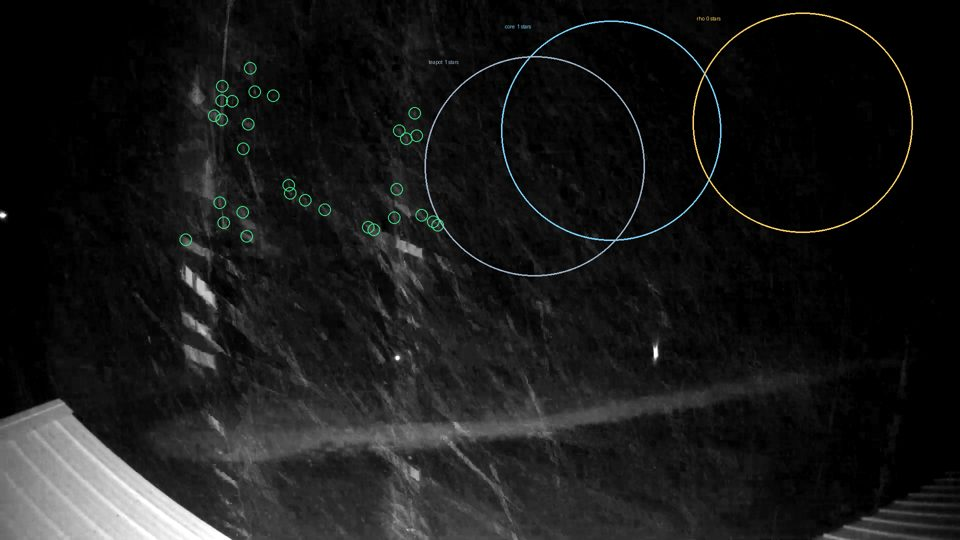
Mon 10 Aug · 22:15 core 1 stars · flux 17,725 · peak 11× · alt 14.6°rho 0 stars · flux 1,992 · peak 12×teapot 1 stars · flux 15,56230 of 60 frames stacked · noise σ 2.1 · 40 sources in sky 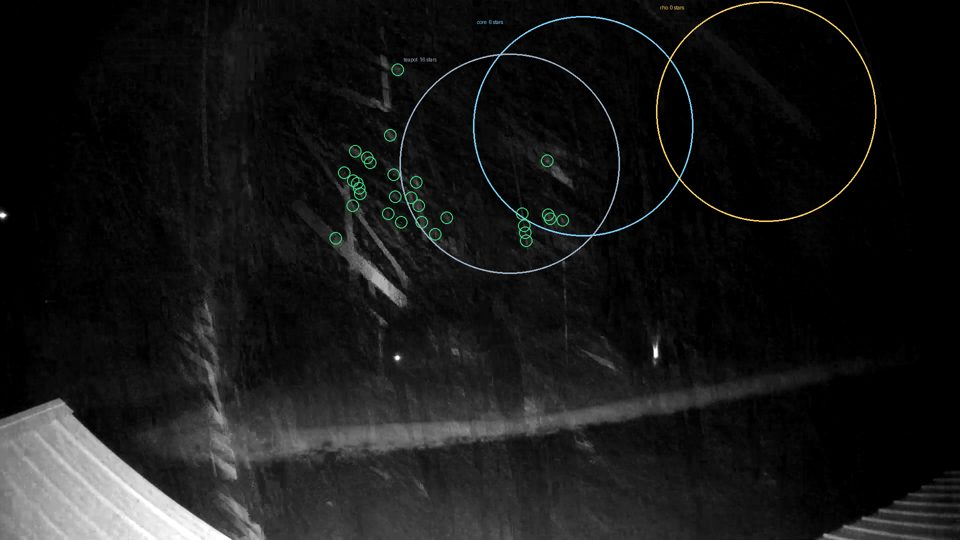
Mon 10 Aug · 22:00 core 6 stars · flux 51,610 · peak 18× · alt 15.1°rho 0 stars · flux 3,572 · peak 6×teapot 16 stars · flux 76,18030 of 60 frames stacked · noise σ 2.67 · 40 sources in sky 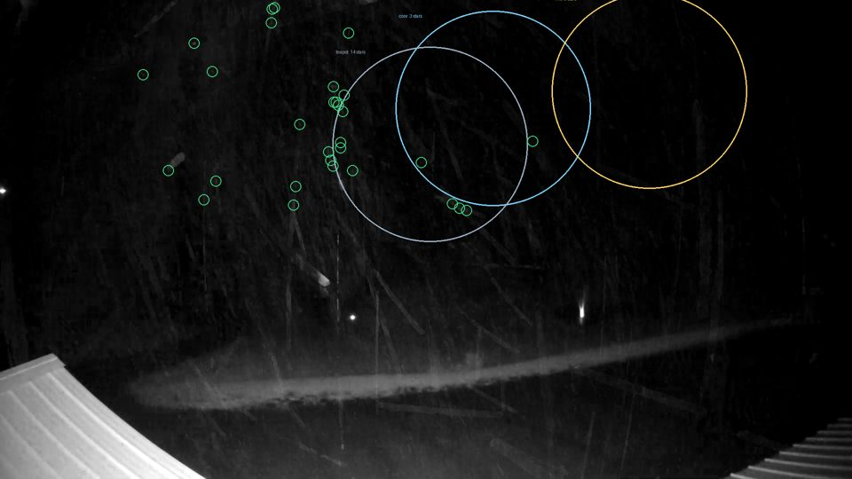
Mon 10 Aug · 21:45 core 3 stars · flux 30,723 · peak 8× · alt 15.5°rho 0 stars · flux 12,509 · peak 6×teapot 14 stars · flux 38,86630 of 60 frames stacked · noise σ 2.29 · 40 sources in sky 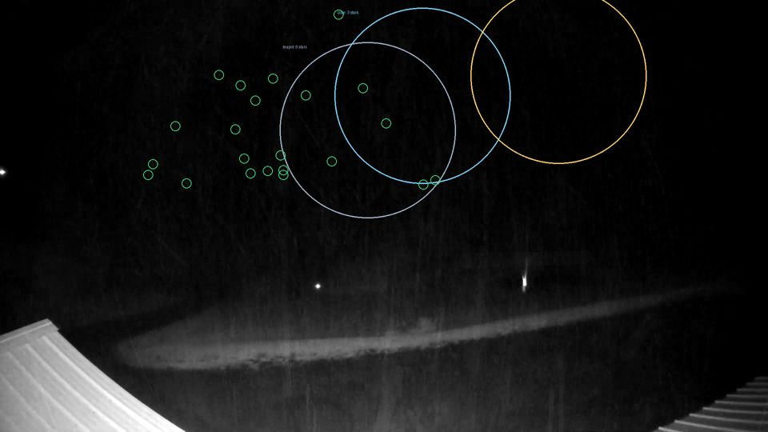
Mon 10 Aug · 21:30 core 3 stars · flux 6,983 · peak 6× · alt 15.8°rho 0 stars · flux 1,965 · peak 6×teapot 6 stars · flux 6,65730 of 60 frames stacked · noise σ 1.32 · 22 sources in sky 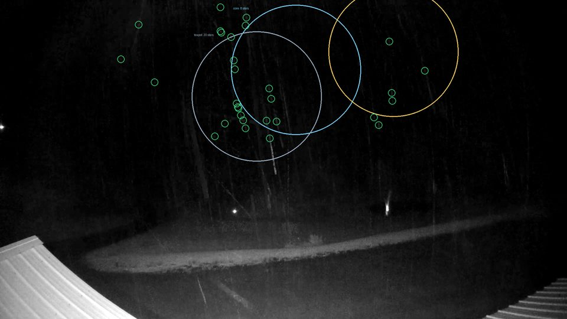
Mon 10 Aug · 21:15 core 8 stars · flux 55,607 · peak 16× · alt 15.9°rho 7 stars · flux 29,204 · peak 16×teapot 20 stars · flux 69,27430 of 60 frames stacked · noise σ 2.34 · 40 sources in sky 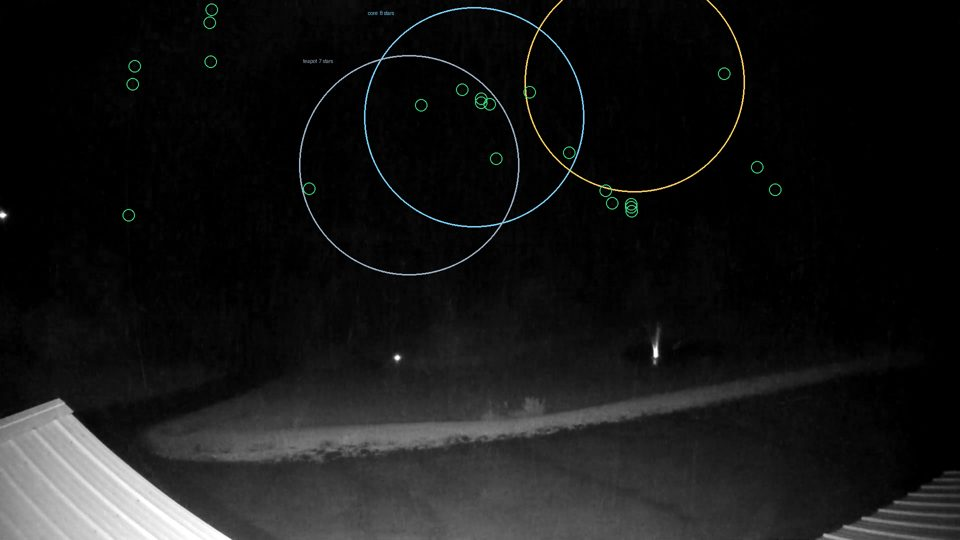
Mon 10 Aug · 21:00 core 8 stars · flux 9,112 · peak 10× · alt 15.8°rho 3 stars · flux 7,701 · peak 9×teapot 7 stars · flux 8,47430 of 60 frames stacked · noise σ 1.26 · 23 sources in sky 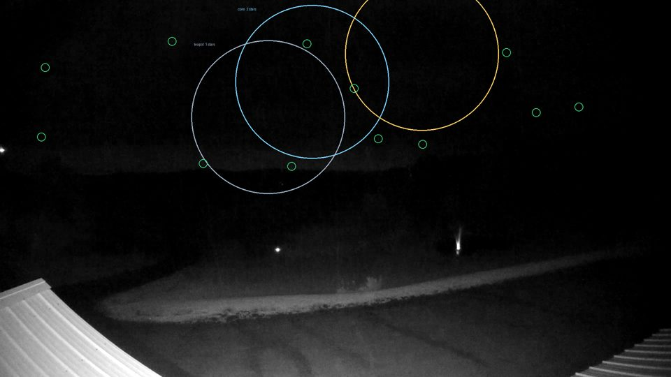
Mon 10 Aug · 20:45 core 2 stars · flux 4,131 · peak 8× · alt 15.6°rho 1 stars · flux 3,630 · peak 8×teapot 1 stars · flux 6,60930 of 60 frames stacked · noise σ 1.62 · 12 sources in sky 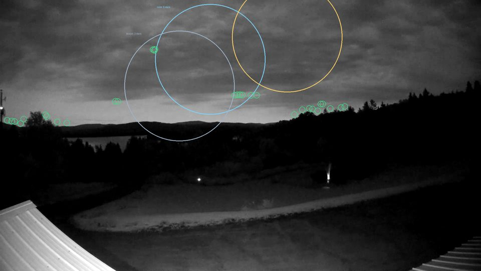
Mon 10 Aug · 20:30 core 5 stars · flux 29,127 · peak 7× · alt 15.2°rho 0 stars · flux 7,977 · peak 7×teapot 3 stars · flux 66,79230 of 60 frames stacked · noise σ 2.55 · 33 sources in sky 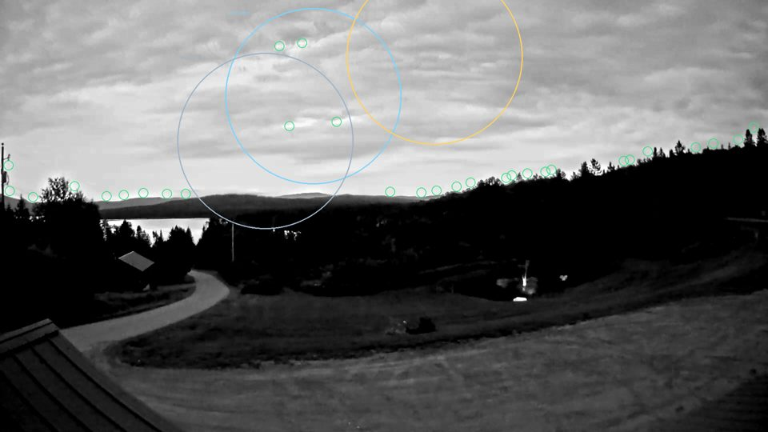
Mon 10 Aug · 20:15 core 5 stars · flux 30,218 · peak 6× · alt 14.6°rho 0 stars · flux 14,889 · peak 5×teapot 5 stars · flux 45,57230 of 60 frames stacked · noise σ 2.43 · 40 sources in sky 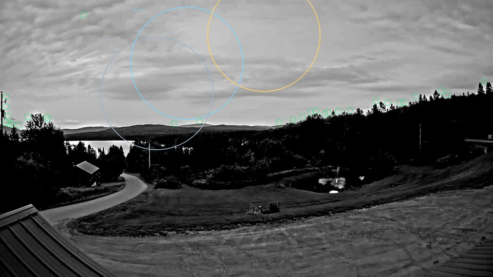
Mon 10 Aug · 20:00 core 0 stars · flux 18,625 · peak 6× · alt 14.0°rho 0 stars · flux 20,252 · peak 12×teapot 4 stars · flux 31,03330 of 60 frames stacked · noise σ 1.7 · 40 sources in sky 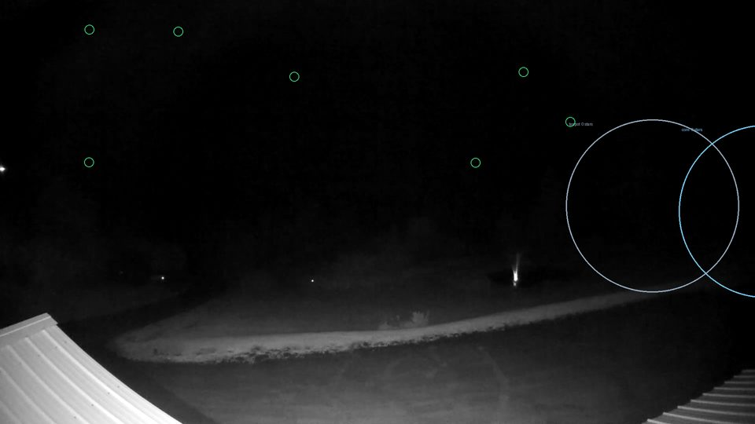
Mon 10 Aug · 01:00 core 0 stars · flux 0 · peak 3× · alt 0.3°rho 0 stars · flux 0 · peak 0×teapot 0 stars · flux 39230 of 60 frames stacked · noise σ 0.82 · 7 sources in sky 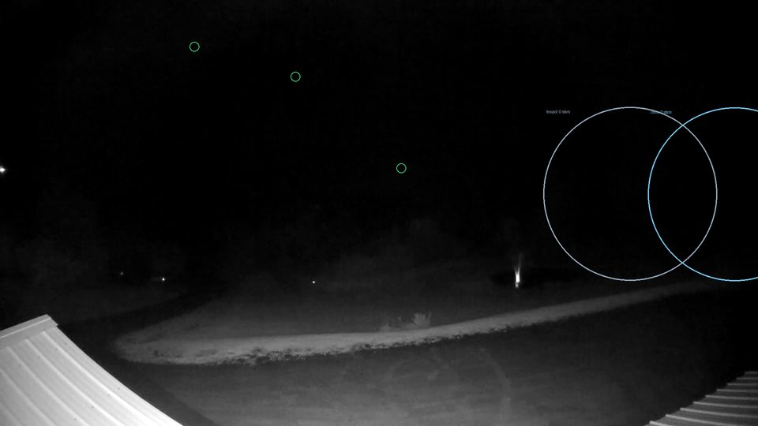
Mon 10 Aug · 00:45 core 0 stars · flux 8 · peak 3× · alt 2.2°rho 0 stars · flux 0 · peak 0×teapot 0 stars · flux 43230 of 60 frames stacked · noise σ 0.96 · 3 sources in sky 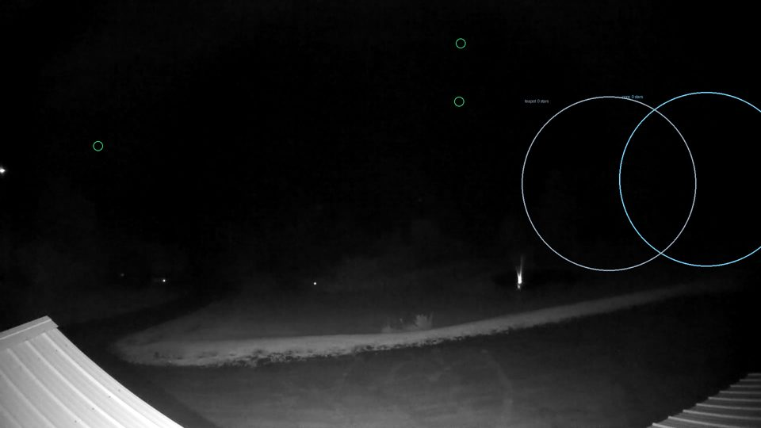
Mon 10 Aug · 00:30 core 0 stars · flux 392 · peak 6× · alt 4.0°rho 0 stars · flux 0 · peak 0×teapot 0 stars · flux 1,21630 of 60 frames stacked · noise σ 0.78 · 3 sources in sky 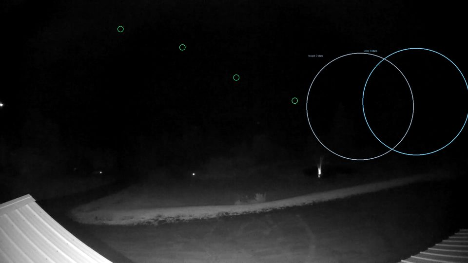
Mon 10 Aug · 00:15 core 0 stars · flux 1,137 · peak 10× · alt 5.6°rho 0 stars · flux 0 · peak 0×teapot 0 stars · flux 2,05830 of 60 frames stacked · noise σ 0.82 · 4 sources in sky Mon 10 Aug · 00:00 core 1 stars · flux 1,562 · peak 9× · alt 7.2°rho 0 stars · flux 0 · peak 0×teapot 2 stars · flux 3,02330 of 60 frames stacked · noise σ 0.82 · 2 sources in sky 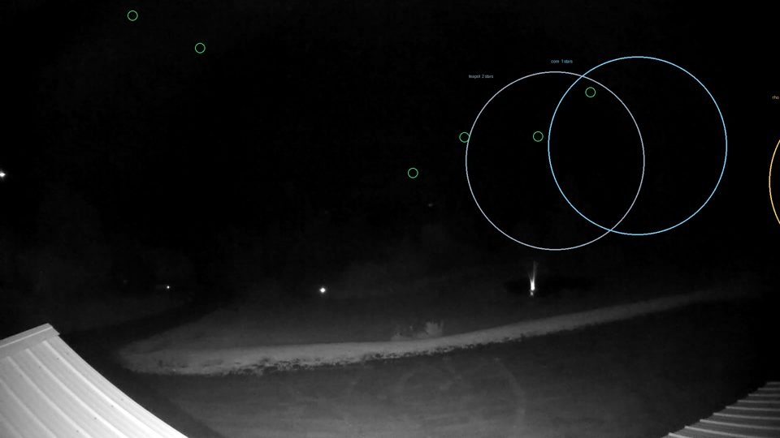
Sun 09 Aug · 23:45 core 1 stars · flux 2,746 · peak 10× · alt 8.7°rho 0 stars · flux 0 · peak 0×teapot 2 stars · flux 4,45230 of 60 frames stacked · noise σ 0.8 · 6 sources in sky 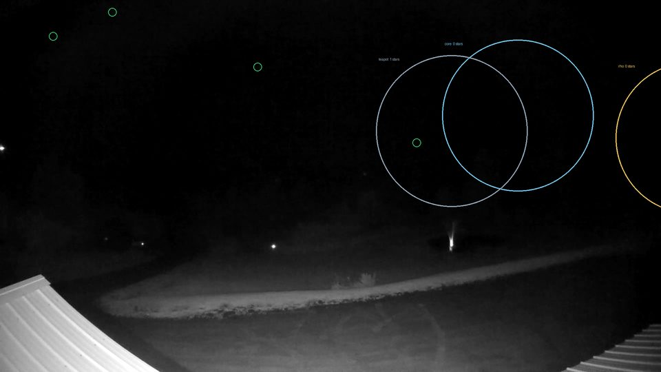
Sun 09 Aug · 23:30 core 0 stars · flux 4,515 · peak 7× · alt 10.0°rho 0 stars · flux 56 · peak 4×teapot 1 stars · flux 5,17630 of 60 frames stacked · noise σ 0.87 · 4 sources in sky 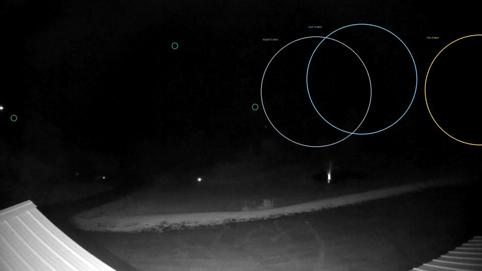
Sun 09 Aug · 23:15 core 0 stars · flux 6,194 · peak 8× · alt 11.2°rho 0 stars · flux 642 · peak 7×teapot 0 stars · flux 5,49930 of 60 frames stacked · noise σ 0.89 · 3 sources in sky 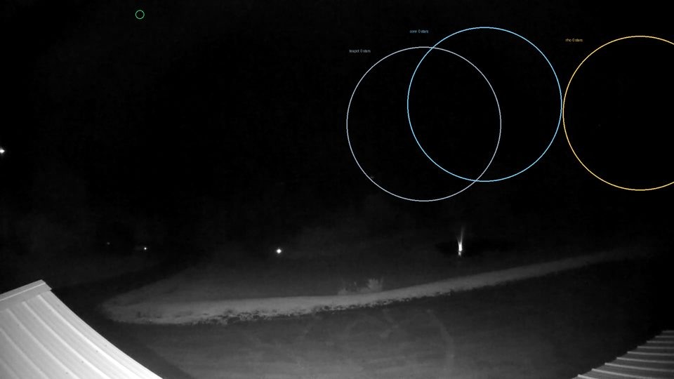
Sun 09 Aug · 23:00 core 0 stars · flux 5,533 · peak 7× · alt 12.3°rho 0 stars · flux 2,126 · peak 9×teapot 0 stars · flux 2,06430 of 60 frames stacked · noise σ 0.89 · 1 sources in sky 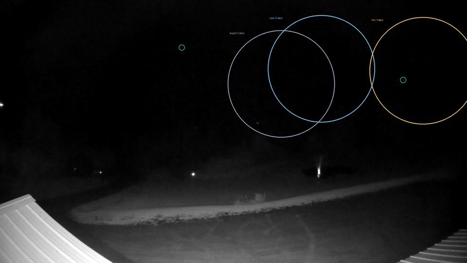
Sun 09 Aug · 22:45 core 0 stars · flux 4,402 · peak 5× · alt 13.3°rho 1 stars · flux 2,893 · peak 93×teapot 0 stars · flux 1,52730 of 60 frames stacked · noise σ 0.88 · 2 sources in sky 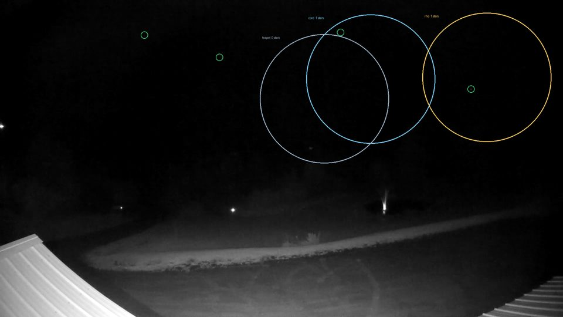
Sun 09 Aug · 22:30 core 1 stars · flux 2,493 · peak 8× · alt 14.1°rho 1 stars · flux 3,602 · peak 89×teapot 0 stars · flux 1,00630 of 60 frames stacked · noise σ 0.88 · 4 sources in sky 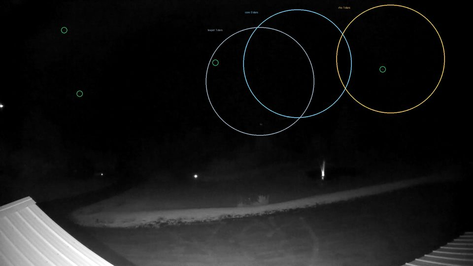
Sun 09 Aug · 22:15 core 0 stars · flux 5,693 · peak 7× · alt 14.8°rho 1 stars · flux 2,824 · peak 122×teapot 1 stars · flux 2,65430 of 60 frames stacked · noise σ 0.75 · 4 sources in sky frame not kept
Sun 09 Aug · 22:00 core 1 stars · flux 3,402 · peak 8× · alt 15.3°rho 1 stars · flux 3,085 · peak 141×teapot 2 stars · flux 2,33730 of 60 frames stacked · noise σ 0.79 · 5 sources in sky frame not kept
Sun 09 Aug · 21:45 core 1 stars · flux 1,458 · peak 7× · alt 15.6°rho 1 stars · flux 5,318 · peak 118×teapot 3 stars · flux 71930 of 60 frames stacked · noise σ 0.84 · 5 sources in sky frame not kept
Sun 09 Aug · 21:30 core 0 stars · flux 815 · peak 5× · alt 15.8°rho 1 stars · flux 4,602 · peak 136×teapot 1 stars · flux 74330 of 60 frames stacked · noise σ 0.83 · 3 sources in sky frame not kept
Sun 09 Aug · 21:15 core 0 stars · flux 1,697 · peak 6× · alt 15.9°rho 1 stars · flux 1,465 · peak 98×teapot 0 stars · flux 1,30630 of 60 frames stacked · noise σ 0.87 · 3 sources in sky frame not kept
Sun 09 Aug · 21:00 core 2 stars · flux 2,718 · peak 23× · alt 15.8°rho 1 stars · flux 1,680 · peak 6×teapot 1 stars · flux 3,24630 of 60 frames stacked · noise σ 1.01 · 5 sources in sky frame not kept
Sun 09 Aug · 20:45 core 0 stars · flux 2,729 · peak 6× · alt 15.5°rho 1 stars · flux 1,912 · peak 41×teapot 1 stars · flux 4,85230 of 60 frames stacked · noise σ 1.2 · 40 sources in sky frame not kept
Sun 09 Aug · 20:15 core 0 stars · flux 1,353 · peak 5× · alt 14.5°rho 0 stars · flux 1,726 · peak 6×teapot 0 stars · flux 31,61930 of 60 frames stacked · noise σ 0.51 · 3 sources in sky frame not kept
Sun 09 Aug · 20:00 core 0 stars · flux 3,490 · peak 6× · alt 13.7°rho 2 stars · flux 1,886 · peak 12×teapot 0 stars · flux 28,60530 of 60 frames stacked · noise σ 0.54 · 28 sources in sky frame not kept
Sun 09 Aug · 01:00 core 0 stars · flux 35 · peak 4× · alt 0.8°rho 0 stars · flux 0 · peak 0×teapot 0 stars · flux 17530 of 60 frames stacked · noise σ 0.9 · 14 sources in sky frame not kept
Sun 09 Aug · 00:45 core 0 stars · flux 51 · peak 6× · alt 2.7°rho 0 stars · flux 0 · peak 0×teapot 0 stars · flux 1,24830 of 60 frames stacked · noise σ 0.8 · 12 sources in sky frame not kept
Sun 09 Aug · 00:30 core 0 stars · flux 181 · peak 4× · alt 4.4°rho 0 stars · flux 0 · peak 0×teapot 0 stars · flux 2,70030 of 60 frames stacked · noise σ 2.2 · 6 sources in sky frame not kept
Sun 09 Aug · 00:15 core 0 stars · flux 728 · peak 7× · alt 6.1°rho 0 stars · flux 0 · peak 0×teapot 0 stars · flux 1,36030 of 60 frames stacked · noise σ 1.3 · 40 sources in sky frame not kept
Sun 09 Aug · 00:00 core 0 stars · flux 661 · peak 5× · alt 7.6°rho 0 stars · flux 0 · peak 0×teapot 0 stars · flux 62230 of 60 frames stacked · noise σ 1.03 · 20 sources in sky frame not kept
Sat 08 Aug · 23:45 core 0 stars · flux 599 · peak 5× · alt 9.0°rho 0 stars · flux 0 · peak 0×teapot 9 stars · flux 3,07530 of 60 frames stacked · noise σ 1.1 · 40 sources in sky frame not kept
Sat 08 Aug · 23:30 core 1 stars · flux 528 · peak 10× · alt 10.4°rho 0 stars · flux 56 · peak 4×teapot 11 stars · flux 39,02830 of 60 frames stacked · noise σ 0.96 · 19 sources in sky frame not kept
Sat 08 Aug · 23:15 core 1 stars · flux 3,045 · peak 12× · alt 11.5°rho 0 stars · flux 183 · peak 5×teapot 14 stars · flux 71,83930 of 60 frames stacked · noise σ 1.29 · 17 sources in sky Every reading
Captured every 15 minutes through the dark hours.
Calibrated on the night of 4 Aug 2026 — the only fully dark night before the trip.